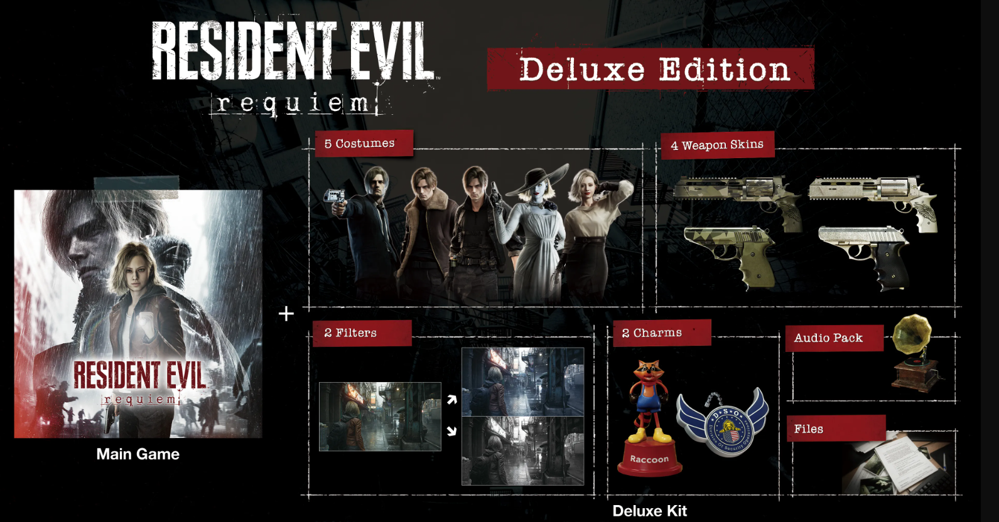

RELEASED 2026
Experience the series' classic survival horror through combat, investigations, puzzles, and resource management. Gameplay allows you to freely switch between first and third-person views to face the horrors in a way that suits your playstyle.
ACCESS RECORDSSTATUS: ALIVE | DSO AGENT
28 years following the Raccoon City outbreak, the DSO decided to initiate an investigation into a mysterious case of unidentifiable deadly illness that affected any survivors that had escaped the 1998 outbreak, with agents Kennedy and Birkin becoming two of its latest victims.
INVESTIGATEA midwestern city in the United States and the headquarters for the former global pharmaceutical company, Umbrella. In the face of the zombie outbreak in 1998, the government approved a sterilization operation, a missile strike on the city in an attempt to quickly bring the situation under control—but this was swiftly covered up.
Select your game edition

Explore and discover the new places in Resident Evil: requiem.